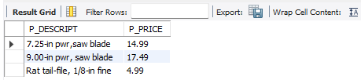

Finals Lab Task 5: Using SQL Views, Stored Procedures, and Functions
This portfolio demonstrates the application of SQL **Views**, **Stored Procedures**, and **Stored Functions** in managing and processing data from a relational database. The task builds upon a predefined inventory system structure and showcases how SQL abstraction can be used for modular and efficient data access.
STEP BY STEP PROCESS
STEP 1
Launch MySQL Workbench or phpMyAdmin and start XAMPP to activate MySQL.
STEP 2
Open MySQL Workbench or phpMyAdmin and import the inventory.sql file to initialize the tables and data.
STEP 3
- Create a database named
inventoryDB
- Use the database created
STEP 4
Import the provided SQL structure (inventory.sql) into inventoryDB to load the necessary tables and sample data.
STEP 5
- Task 1 – Create a VIEW that displays vendor\_code, vendor\_name, product\_description, and p\_indate for all products from 2002 onwards
- Task 2 – Create a VIEW for products priced between 100 and 150
- Task 3 – Create a VIEW that calculates the total price (p\_onhand × p\_price) of all products sold by vendors with codes: 21344, 23119, and 24288
- Task 4 – Create a STORED PROCEDURE that updates vendor name from 'Bryson, Inc.' to 'Bryson and Co'
- Task 5 – Create a FUNCTION that takes v\_code and v\_state as parameters and returns matching product descriptions and prices
Query Statements (Screenshots)
Task 1
Task 2
Task 3
Task 4
Task 5
Table Structures (Screenshots)
Table 1
Table 2
Table 3
Table 4
Table 5

SQL Copy (File)
📂 L.E.Turla (Finals Lab Task 3-1 Code)